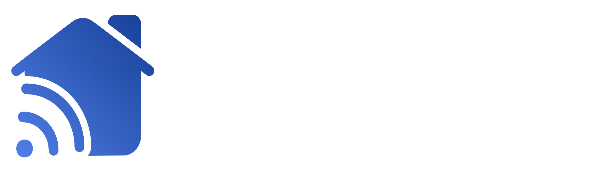

{% extends 'base.html' %} {% block body %}
<nav class="navbar navbar-dark bg-dark">
    <div class="container">
        <a class="navbar-brand" href="#">
            
        </a>
    </div>
</nav>
<div class="container mt-5">
    <h1>No Remotes Connected</h1>
    <p>
        Press the below button to find any nearby SmartLink remotes to connect
        to.
    </p>
    <button
        type="button"
        class="btn btn-primary btn-lg btn-block"
        id="find-remote-btn"
    >
        Find remote
    </button>
</div>
<script>
    $(document).ready(function () {
        $("#find-remote-btn").click(function () {
            $("#find-remote-btn").addClass("disabled");
            $("#find-remote-btn").text("Finding remote...");
            $.ajax({
                url: "/find-remote",
                type: "POST",
                contentType: "application/json",
                data: JSON.stringify({}),
                success: function (response) { },
                error: function (response) {
                    addErrorAlert("Cannot find the remote client. Please make sure remote client is running on the same network.");
                    $("#find-remote-btn").removeClass("disabled");
                    $("#find-remote-btn").text("Find remote");
                }
            });
        });
        
        socket.on("smartlink/connect_remote_response", function (msg) {
            if (msg["response"] == 'success') {
                $.ajax({
                    url: "/save-remote",
                    type: "POST",
                    contentType: "application/json",
                    data: JSON.stringify({
                        "remote_name": msg["name"]
                    }),
                    success: function (response) {
                        window.location.replace('/');
                    },
                    error: function (response) {
                        console.error(response);
                        addErrorAlert("Cannot contact remote client. Please make sure remote client is running on the same network.");
                        $("#find-remote-btn").removeClass("disabled");
                        $("#find-remote-btn").text("Find remote");
                    }
                });
            } else {
                console.error(msg);
                addErrorAlert("Cannot contact remote client. Please make sure remote client is running on the same network.");
                $("#find-remote-btn").removeClass("disabled");
                $("#find-remote-btn").text("Find remote");
            }
        });
    });
</script>
{% endblock %}
